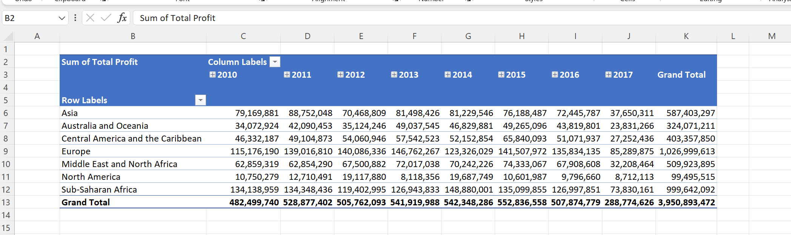

Creating a Pivot Table using Python¶
xlSlim allows many VBA tasks to be done using Python. A very common task is loading data and creating a pivot table. This example shows how xlSlim can be used to load csv data using PowerQuery and then create a pivot table.
Warning
This functionality requires a premium licence as a Python environment with the pywin32 extensions installed is required. Anaconda distributions include pywin32. See Licensing
The example uses this sample data Save the csv data as a new file on your PC. I saved the file in my Documents folder.
We will use this Python code to read the csv data and create the pivot table. The code is quite long, however there are several useful techniques shown. The code is well worth studying:
# Create a pivot table in Excel using Python win32 COM
# Developed with Excel 365
import os
import logging
import pythoncom
import win32com.client as win32
from win32com.client import constants
XLSLIM_COMAPPFUNC = None
LOG = logging.getLogger(__name__)
def create_pivot_table(data_file):
"""Create a pivot table from the data in the supplied file.
Shows the basics of importing using PowerQuery and then creating
a pivot table using COM.
Could be further enhanced to make the fields configurable.
"""
if not os.path.exists(data_file):
raise ValueError(f"{data_file} does not exist")
excel_launched = False
app = None
try:
if XLSLIM_COMAPPFUNC is not None:
# Running from Excel
# Do be careful not to accidentally edit the calling cell
excel_obj = XLSLIM_COMAPPFUNC()
app = excel_obj.Application
app.ScreenUpdating = False
app.Workbooks.Add().Activate()
else:
# Running in an editor so we make it visible and keep screen updating on
#
# Check for a running Excel
try:
app = win32.GetActiveObject("Excel.Application")
app.Visible = 1
except:
# However if developing the gencache versions gives a better editing experience
# as methods and properties are then known in the editor
# So you may need to go kill Excel instances in Task Manager
app = win32.gencache.EnsureDispatch("Excel.Application")
excel_launched = True
app.Visible = 1
app.Workbooks.Add().Activate()
# Get the active workbook
wb = app.ActiveWorkbook
# Import the csv data using PowerQuery, note the transformations of the date columns
# so the dates are imported using US date formats.
data_sheet = wb.Sheets.Add()
data_sheet.Name = "Data"
wb.Queries.Add(
Name="10000SalesRecords",
Formula=r"""
let
Source = Csv.Document(File.Contents("DATAFILE"),[Delimiter=",", Columns=14, Encoding=1252, QuoteStyle=QuoteStyle.None]),
#"Promoted Headers" = Table.PromoteHeaders(Source, [PromoteAllScalars=true]),
#"Changed Type" = Table.TransformColumnTypes(#"Promoted Headers",{{"Region", type text}, {"Country", type text}, {"Item Type", type text}, {"Sales Channel", type text}, {"Order Priority", type text}, {"Order Date", type text}, {"Order ID", Int64.Type}, {"Ship Date", type text}, {"Units Sold", Int64.Type}, {"Unit Price", type number}, {"Unit Cost", type number}, {"Total Revenue", type number}, {"Total Cost", type number}, {"Total Profit", type number}}),
#"Changed Type with Locale" = Table.TransformColumnTypes(#"Changed Type", {{"Order Date", type date}}, "en-US"),
#"Changed Type with Locale1" = Table.TransformColumnTypes(#"Changed Type with Locale", {{"Ship Date", type date}}, "en-US")
in
#"Changed Type with Locale1"
""".replace(
"DATAFILE", data_file
),
)
list_object = data_sheet.ListObjects.Add(
SourceType=0,
Source='OLEDB;Provider=Microsoft.Mashup.OleDb.1;Data Source=$Workbook$;Location=10000SalesRecords;Extended Properties=""',
Destination=data_sheet.Range("$A$1"),
)
query_table = list_object.QueryTable
query_table.CommandType = constants.xlCmdSql
query_table.CommandText = "SELECT * FROM [10000SalesRecords]"
query_table.Refresh()
# Create the pivot cache
pivot_sheet = wb.Sheets.Add()
wb.ActiveSheet.Name = "PivotTable"
pivot_caches = wb.PivotCaches()
pivot_cache = pivot_caches.Create(
SourceType=constants.xlDatabase,
SourceData=f"{data_sheet.Name}!{list_object.Range.Address}",
)
# Create the pivot table
pivot_tables = pivot_sheet.PivotTables()
pivot_table = pivot_tables.Add(
pivot_cache, pivot_sheet.Cells(2, 2), "SalesPivotTable"
)
# Add fields
pivot_table.PivotFields("Order Date").Orientation = constants.xlColumnField
pivot_table.PivotFields("Order Date").Position = 1
pivot_table.PivotFields("Order Date").AutoGroup()
pivot_table.PivotFields("Region").Orientation = constants.xlRowField
pivot_table.PivotFields("Region").Position = 1
pivot_table.AddDataField(
pivot_table.PivotFields("Total Profit"),
"Sum of Total Profit",
constants.xlSum,
).NumberFormat = "#,##0"
# Format the table
pivot_table.ShowTableStyleRowStripes = True
pivot_table.TableStyle2 = "PivotStyleMedium9"
except pythoncom.com_error as err:
(hr, msg, exc, arg) = err.args
LOG.error(
"The Excel COM call failed with code %d: %s" % (hr, msg), exc_info=True
)
if exc is None:
LOG.error("There is no extended error information")
else:
wcode, source, text, helpFile, helpId, scode = exc
LOG.error("The source of the error is: %s", source)
LOG.error("The error message is: %s", text)
# Useful in development else you end up with many Excel instances
if excel_launched and app is not None:
app.Quit()
return "An error ocurred calling the Excel COM object: %s" % (text)
if app is not None:
app.ScreenUpdating = True
return "Done"
if __name__ == "__main__":
logging.basicConfig()
data_file = os.path.abspath(
os.path.join(os.path.dirname(__file__), r"pivot_table_data.csv")
)
create_pivot_table(data_file)
Note
All the Python code and Excel files shown are available from github in the xlslim-code-samples repo.
Save the Python code as a new file on your PC. I saved the file in my Documents folder.
Open Excel and enter this RegisterPyModule() formula (amending the location to match where you saved the file):
=RegisterPyModule("c:\users\russe\documents\pivot_table.py")
You should see a message similar to this confirming the module registration:
{kind=link}
The create_pivot_table() function is now available in Excel and can be called by entering this formula (amending the location to match where you saved the data file):
=create_pivot_table("c:\users\russe\documents\pivot_table_data.csv")
The function runs and moments later the pivot table is created!
{kind=link}
Note how PowerQuery loaded the data into a new Data tab:
{kind=link}
The create_pivot_table() function may be called repeatedly, each call will result in a new workbook and a new pivot table. The Python code is also written so the code may be run from a Python editor and debugged.